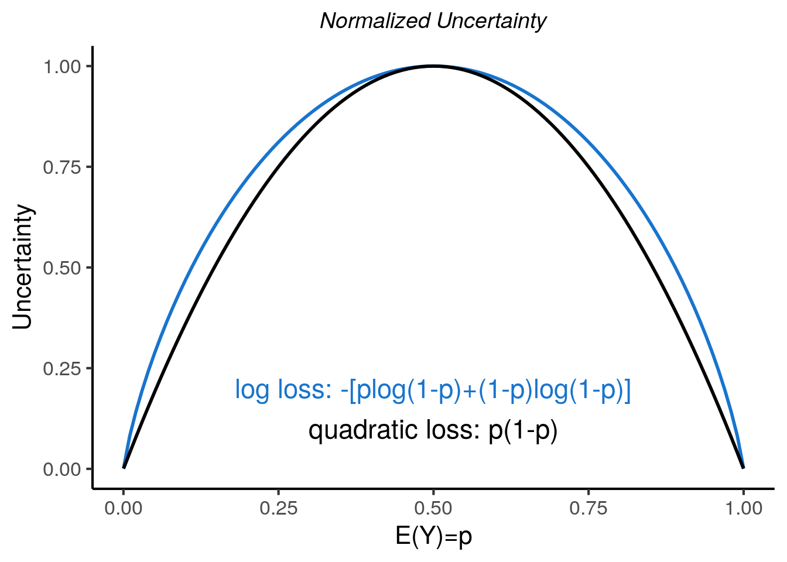
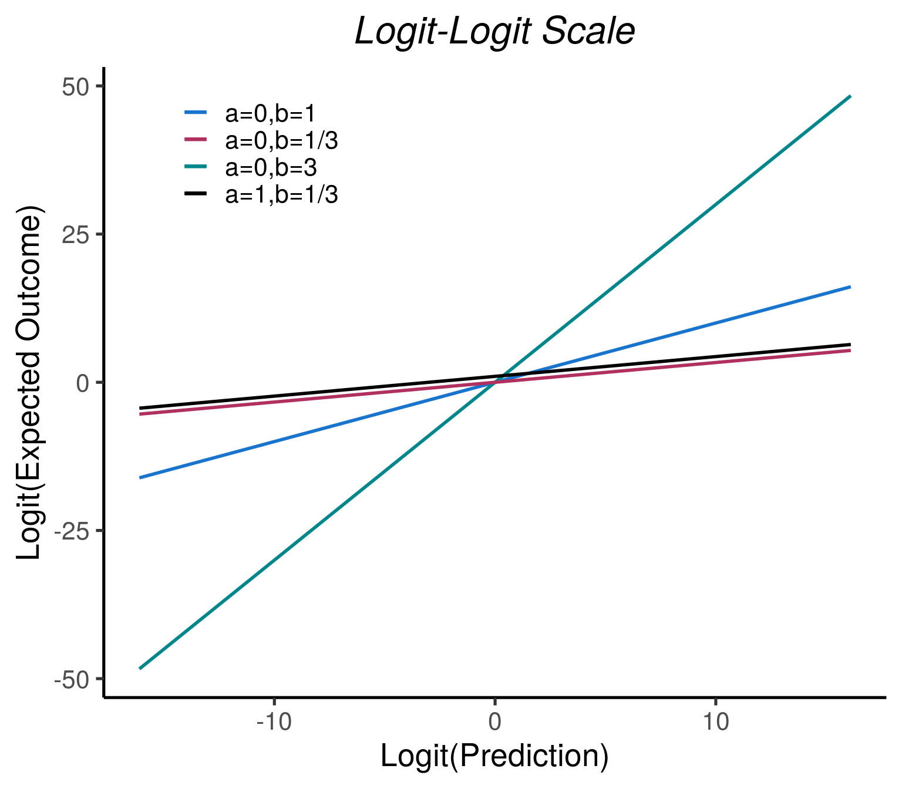
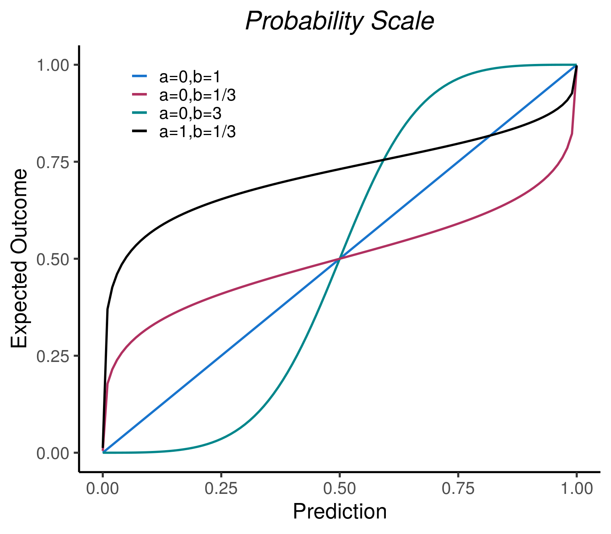

\[\\[.02in]\] Below is the second part of a two part post on model performance evaluation and the fundamental decomposition of \(R^2\). Part 1 of this post discussed how the general quality of predictions is assessed by accuracy, calibration, and discrimination. An approach was proposed that unifies these concepts via a scaled decomposition of accuracy into miscalibration and discrimination, \(R^2 = \mathrm{DI} - \mathrm{MI}\). In Part 1 it was discovered that the three key metrics are \(R^2\), \(r^2\), and \(\mathrm{DI}\), that they satisfy a key inequality, \(R^2 \leq r^2 \leq DI\) and that \(R^2\) can indeed be negative!
We now discuss the binary outcome setting and how the fundamental decompostion can be generalized…
Binary Outcomes
When outcomes are binary, \(Y\in\{0,1\}\), the metrics and decomposition discussed in Part 1 of this post that were based on quadratic loss still apply without change. Importantly, the interpretations of the metrics hold for binary outcomes as well:
Recall that quadratic loss is a strictly proper scoring rule (defined in more detail below). Remarkably, it has been shown that the decomposition into miscalibration and discrimination applies more generally to all strictly proper scoring rules, not just quadratic loss, and still retains its general interpretation (Brocker, 2009). An alternative strictly proper scoring rule that is commonly used for binary outcomes is the log loss–sometimes referred to as cross entropy.
Scoring Rules
A scoring rule takes a predicted outcome \(\hat{y}\) and a realized outcome \(y\) and assigns a real valued score \(s(\hat{y}, y)\). Scoring rules can have negative or positive orientation, where negative orientation refers to larger scores representing worse discrepancies between \(\hat{y}\) and \(y\). We assume negative orientation so that scores represent a loss. The score, \(S(\hat{Y}, Y)\) is defined as the expected value of the scoring rule, \(\mathbb{E}[s(\hat{Y}, Y)]\). For example, \(\mathrm{MSE}\) is the score based on the quadratic loss scoring rule. In the binary outcome setting, \(\mathrm{MSE}\) is often called the Brier Score, first proposed in 1950 for applications in meteorology (Brier, 1950).
A scoring rule is proper if the score based on that scoring rule is optimized at \(\mathbb{E}[Y]\). It is strictly proper if it is uniquely optimized there. In other words, scores that are based on strictly proper scoring rules are optimized when predictions are equal to the true expected values (probabilities in the case of binary outcomes), so strictly proper scoring rules incentivize accurate predictions.
Any score that is based on a strictly proper scoring rule can be decomposed into calibration and discrimination components. To show this, we first define the following terms which are also shown mathematically in Table 1. This is simply meant to be a brief sketch of these concepts, and for more details see Brocker (2009):
Uncertainty: \(S(\mathbb{E}(Y),Y)\). Uncertainty is the score evaluated at the constant prediction \(\hat{y}=\mathbb{E}(Y)\). In general, uncertainty measures the spread of the outcomes and does not depend on the prediction model. When the scoring rule is quadratic loss, uncertainty is the variance of \(Y\) which is simply \(\mathbb{E}(Y)(1-\mathbb{E}(Y))=p(1-p)\) for binary outcomes. When the scoring rule is log loss, uncertainty is the same as Shannon’s information entropy. Figure 1 shows uncertainty as a function of \(\mathbb{E}(Y)\) for quadratic and log loss scoring rules. These functions are both unimodal and symmetric about \(\mathbb{E}(Y) = \frac{1}{2}\), with minimum of zero uncertainty at the two extremes of \(\mathbb{E}(Y)\) equal to 0 or 1.
Miscalibration: \(S(\hat{Y},Y) - S(C(\hat{Y}),Y)\). Miscalibration is the difference between scores evaluated at the original and recalibrated predictions. It is also often referred to as reliability. Using language from information geometry, miscalibration is the expected divergence between the predictions, \(\hat{Y}\), and the recalibrated predictions, \(C(\hat{Y})\). In information geometry, expected divergence is a type of statistical distance, so miscalibration measures the distance between the original and recalibrated predictions. For quadratic loss, the divergence is simply squared Euclidean distance; for log loss, the divergence is Kullback-Leibler divergence.
Discrimination: \(S(E(Y),Y) - S(C(\hat{Y}),Y)\). Discrimination, also often referred to as resolution, measures the distance between the best constant prediction \(\mathbb{E}(Y)\) and the recalibrated predictions. Therefore, discrimination is a measure of spread in the recalibrated predictions about \(\mathbb{E}(Y)\). For quadratic loss, this measure of spread is simply the variance of the recalibrated predictions; for log loss, it is the Kullback-Leibler divergence between the constant prediction of \(\mathbb{E}(Y)\) relative to the recalibrated predictions. Note that Uncertainty, \(S(E(Y),Y)\), which is the first term of the difference, is not affected by the prediction model. The second term of the difference, \(S(C(\hat{Y}),Y)\), is minimized and thus discrimination is maximized when recalibrated predictions are at the extremes of 0 or 1. Intuitively this makes sense since we would want to say that a model with many calibrated predicted probabilities close to the extremes is able to discriminate well between observations.

| General | Quadratic Loss | Log Loss | |
|---|---|---|---|
| Scoring rule | \(s(\hat{y},y)\) | \((\hat{y}-y)^2\) | \(-[y*log(\hat{y})+(1-y)*log(1-\hat{y})]\) |
| Score | \(\mathbb{E}[s(\hat{Y},Y)]\) | \(\mathbb{E}[(\hat{Y}-Y)^2]\) | \(-\mathbb{E}[Y*log(\hat{Y})+(1-Y)*log(1-\hat{Y})]\) |
| Uncertainty | \(S(\mathbb{E}(Y),Y)\) | \(\mathbb{E}(Y)(1-\mathbb{E}(Y))\) | \(-[\mathbb{E}(Y)*log(\mathbb{E}(Y))+(1-\mathbb{E}(Y))*log(1-\mathbb{E}(Y))]\) |
| Miscalibration | \(S(\hat{Y},Y)-S(C(\hat{Y}),Y)\) | \(\mathbb{E}[(\hat{Y}-C(\hat{Y}))^2]\) | \(-\mathbb{E}\Big[C(\hat{Y})*log\Big(\frac{\hat{Y}}{C(\hat{Y})}\Big)+(1-C(\hat{Y}))*log\Big(\frac{1-\hat{Y}}{1-C(\hat{Y})}\Big)\Big]\) |
| Discrimination | \(S(\mathbb{E}(Y),Y)-S(C(\hat{Y}),Y)\) | \(Var(C(\hat{Y}))\) | \(-\mathbb{E}[C(\hat{Y})*log\Big(\frac{\mathbb{E}(Y)}{C(\hat{Y})}\Big)+(1-C(\hat{Y}))*log\Big(\frac{1-\mathbb{E}(Y)}{1-C(\hat{Y})}\Big)]\) |
Generalized Fundamental Decomposition
For strictly proper scoring rules, the Fundamental Decomposition discussed in Part 1 of this post can then be generalized to:
Note that \(R^2\) is simply the score expressed as a skill score for the prediction model relative to the optimal null model (Fissler et al., 2022).
With the metrics and decomposition now defined under a general proper scoring rule, we re-emphasize that all properties described in the preceding sections still apply for log loss scoring. In addition, the interpretations of the metrics discussed previously in Part 1 of this post also apply with suitable modifications:
We note that in practice these metrics can all be estimated using straightforward empirical estimators similar to those described for quadratic loss (see section on estimation discussed in Part 1 of this post).
Comments on misclassification error
Finally, we note that misclassification error is also a commonly used metric for probabilistic predictions of binary outcomes. It has been noted that this metric is a score based on a proper scoring rule (Dimitriadis et al., 2021): \(I(\hat{y}<1/2,y=1)+I(\hat{y}>1/2,y=0)+ \frac{1}{2} I(\hat{y}=1/2)\).
This scoring rule dichotomizes the probabilistic predictions via a threshold at 1/2 and the proportion of discrepancies with the outcome is the misclassification error metric. However it is not strictly proper since it only matters if the predicted probability is above or below the decision threshold. Misclassification error will not change if the probabilistic predictions are adjusted arbitrarily, as long as those adjustments do not cross the decision threshold. Consequently misclassification error is not uniquely optimized at the true probabilities. Since misclassification error is not a strictly proper scoring rule, a decomposition into calibration and discrimination cannot meaningfully be used for that scoring rule.
More importantly, in most applications it is the predicted probabilities that are of interest so that individual users of the model can make their own decisions on what actions to take. In such settings it is premature for the builder of the prediction model to use an arbitrary cut point, such as 1/2, as a decision threshold. An exception to this would be for prediction models that have nearly perfect accuracy for the binary outcomes and where costs of the few misclassifications are roughly the same for predicted events vs predicted non events. An example of this would be modern optical character recognition systems. However, most applications do not satisfy such prerequisites and we do not recommend the use of misclassification error as a performance metric. Frank Harrell’s insightful blog on statistical thinking has further discussion of this topic.
Pseudo \(R^2\)
In parallel with the development of metrics based on scoring rules, there has been considerable work to develop pseudo-\(R^2\)s that are applicable to binary outcomes (see MITTLBOCK et al. (1996) for a nice summary). We review some of them below and place them in context of what we have learned about quadratic and log loss-based metrics. Pseudo-\(R^2\) metrics are usually calculated in-sample. However, we will comment on the more relevant population performance when these are applied out of sample as we have done in the rest of the blog:
Sum of Squares \(R^2\) (\(R^2_{SS}\)): This is equivalent to the \(R^2\) based on quadratic loss.
Entropy \(R^2\) (\(R^2_E\)): This is the same as the \(R^2\) based on the log loss scoring rule. It was proposed by Theil (1970) and is equivalent to McFadden’s \(R^2\) (McFadden, 1974; Theil, 1970).
Gini’s Concentration Measure \(R^2\) (\(R^2_G\)): This is the expected nominal variance of the conditional Bernoulli outcomes. If predictions are calibrated, this is the same as \(R^2 = DI\) for quadratic loss. If predictions are not calibrated there is no guarantee \(R^2_G\) represents anything meaningful.
Tjur’s Coefficient of Discrimination \(R^2\) (\(R^2_T\)) (Tjur, 2009): This is the mean of the predictions for all events minus the mean of the predictions for all non events: \(\mathbb{E}(\hat{Y} | Y = 1) - \mathbb{E}(\hat{Y} | Y = 0)\). We note it is also the same as discrimination slope (Pencina et al., 2008). Surprisingly, if the predictions are calibrated then this is the same as \(R^2 = DI\) for the quadratic loss scoring rule (Pepe et al., 2008). If predictions are not calibrated, there is no guarantee this represents anything meaningful. For example, all predictions can be multiplied by a small positive scalar, \(k\). These transformed scores should have the same discrimination as the original predictions, but \(R^2_T\) will be multiplied by that same factor, \(k\).
Cox and Snell \(R^2\) (\(R^2_{CS}\)): This is \(1 - \big(\frac{\mathbb{L}_{null}}{\mathbb{L}_{model}}\big)^{(2/n)}\), also known as the Maximum Likelihood \(R^2\). If the normal theory based likelihood is used for regression, then this is equivalent to the usual in-sample OLS \(R^2\). It is therefore viewed as a generalization of \(R^2\) applicable to a variety of distributions. However, for binary outcomes, the upper limit of this pseudo-\(R^2\) is strictly less than 1, even with perfect predictions. It also doesn’t correspond to the skill score of a strictly proper scoring rule so the fundamental decomposition and interpretations do not apply to it.
Nagelkerke \(R^2\) (\(R^2_N\)): This rescales the Cox and Snell pseudo \(R^2_{CS}\) by its maximum value, \(U = 1 - \mathbb{L}_{null}^{(2/n)}\). So \(R^2_N = R^2_{CS} / U\) now has a maximum value of 1 which is achieved when all predictions are perfect. However, it still has the disadvantage of the Cox and Snell pseudo-\(R^2\) that it does not correspond to the skill score of a strictly proper scoring rule.
We prefer the metrics suggested in this blog over both \(R^2_{CS}\) and \(R^2_N\) due to the greater interpretation provided by the Fundamental Decomposition and interpretation as Proportion of Explained Uncertainty, potentially after suitable recalibration. The other pseudo-\(R^2\)s, when viewed as out of sample population parameters represent either \(R^2\) or \(DI\), potentially after suitable recalibration, for either quadratic or log Loss, so they do not add anything to the metrics we have proposed. We note also that this is not an exhaustive list of pseudo-\(R^2\)s, and there are additional variations, for example, to account for over-fitting (Hemmert et al., 2018). Rather than addressing over-fitting by incorporating explicit adjustments into the metrics, we handle this by out of sample estimation and, in case the same data is being used to develop the predictive models, resampling based on out of sample estimates.
Summary/Key Points
The general quality of predictions is assessed by accuracy, calibration, and discrimination. These three evaluation domains are often assessed completely independently of each other.
We propose an approach that unifies these concepts via a scaled decomposition of accuracy into miscalibration and discrimination, \(R^2 = \mathrm{DI} - \mathrm{MI}\). This decomposition is unitless and clarifies that \(\mathrm{DI}\) is the accuracy when there is no miscalibration, equivalently when the predictions are re-calibrated using the calibration curve.
Interestingly, \(r^2\) can be interpreted as the \(R^2\) for the best linear recalibration. That metric is also inherently of interest for some applications such as covariate adjustment.
The three key metrics are \(R^2\), \(r^2\), and \(\mathrm{DI}\) and they satisfy a key inequality, \(R^2 \leq r^2 \leq DI\). The remaining metrics of \(\mathrm{MI}\) and \(\mathrm{NI}\) are derived from these.
Discrimination can never be improved via recalibration, but miscalibration and accuracy can. These metrics are very informative for assessing how much accuracy can be improved via linear recalibration and recalibration via the calibration curve.
For binary outcomes, both Brier Scores and Log Loss can be used to obtain meaningful performance metrics. For both, the decomposition and interpretations (with suitable modifications) all hold. In general, we recommend use of either score.
References
Citation
@misc{friesenhahn,christinarabeandcourtneyschiffman2023,
author = {Michel Friesenhahn, Christina Rabe and Courtney Schiffman},
title = {Everything You Wanted to Know about {R2} but Were Afraid to
Ask. {Part} 2, {Binary} Outcomes and Generalizing the Fundamental
Decomposition.},
date = {2023-10-31},
url = {https://www.go.roche.com/stats4datascience},
langid = {en}
}
Comments on log loss
Because of the connections to maximum likelihood estimation and information theory, some researchers prefer log loss to quadratic loss for binary outcomes. We note two issues with log loss scoring. The first is that log loss is not defined if \(\hat{y} = 0\) and \(y = 1\), even in a large data set. So log loss should be restricted to the evaluation of models that will never make predictions that are exactly 0. The second issue is that metrics based on quadratic loss are arguably more interpretable or at least familiar to many researchers and data scientists. Both quadratic and log loss are frequently used for binary outcomes and we recommend either (better yet, both if possible) for performance evaluation.
Since Brier scores are equivalent to MSE, the definition of a calibration line for quadratic loss scoring rules is the same as defined in the preceding sections. However, note that since the outcomes are binary, the calibration line is not guaranteed to have predictions between 0 and 1. Therefore we recommend being cautious about the use of calibration lines when using quadratic loss.
Recall that the calibration line was previously defined as the linear transformation of the predictions that maximizes the quadratic loss-based \(R^2\). If log loss is used instead, the calibration line is then defined as the population logistic regression of outcome versus \(\hat{Y}\) and in this case \(logit(\mathbb{E}(Y|\hat{Y}))\) would be some linear function of \(\hat{Y}\). However, this is problematic, since if the model is calibrated then \(logit(\mathbb{E}(Y|\hat{Y}))=logit(\hat{Y})\), which is not a linear function of \(\hat{Y}\), let alone one with intercept 0 and slope 1. This issue is solved by performing a population logistic regression of outcome on \(logit(\hat{Y})\) rather than on \(\hat{Y}\), which is usually how an appropriate calibration line is defined for log loss.
Figure 2 shows that when \(\hat{Y}\) is logit transformed prior to fitting the logistic regression (i.e. both conditional outcome probabilities \(C(\hat{Y})\) and \(\hat{Y}\) are logit transformed), calibration lines will actually be lines. However, on the original probability scale calibration lines are actually curves (except when the predictions are perfectly calibrated).

